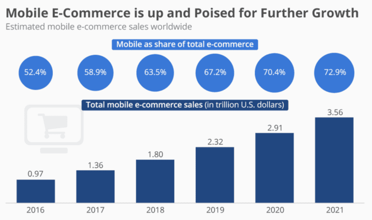

BakeBot
Topic
The prototype of Bake Bot will be a proof-of-concept showing the main important functions of the app and how they will generally work. It will not include all of Bake Bot’s features that would be in the final version as there isn’t enough time or expertise to contain all the features in this prototype. The functions that will be shown in the prototype will also not be final and would most likely be improved if the project continued into the future. The proof-of-concept prototype will be done with Proto.io, a web-based application that allows you to visually show what your app could look like with UI wireframes. The general UI feel and some visual functions of Bake Bot will be interactively shown through Proto.io.
The main feature that would be demonstrated in the prototype will be the dynamic recipe, as it is the core of the app. Other secondary features like the Baking Journal, Baking Course, Store, Grocery List Maker, and Baking-Assist will be visually shown in the prototype but, the full functionality will not. As they are some limitations to what proto.io can do. As this is a proof-of-concept, some features will not make it into the prototype due to both time constates and lack of expertise. However, if the project were to continue. Some features that could make it into Bake Bot would be IoT functionality with things like smart ovens. And a chatbot function so a user could navigate the app through voice alone without UI getting in the way.
Motivation
A few years ago, I decided to learn how to bake and was quite intimidated. It looked complicated and it was. Measurements were all over the place, with tablespoons and teaspoons and cups and grams. You had to do math for some reason. And one mistake could ruin everything. It was uniquely difficult from any other type of cooking I had done. And the worst part was…all of it was unnecessary. You don’t have to do math while cooking. You don’t have to constantly look up how many tablespoons are in a cup. We have apps for that, right? Except we don’t, all the cooking apps were for making grocery lists or for diet fads. This is when the idea came to me, if no one else was going to do it then I would have to do it myself. And make baking hassle-free forever.
I believe numerous new home-bakers go through the same experience of needless complications will baking recipes and Bake Bot is here to solve this problem. Especially in a post-covid world, the number of new untapped home-bakers looking to streamline and automate their baking experience is more than ever before. During the initial covid lockdown in Australia, the IRI reported chilled and abundant categorises in grocery stores ‘experienced double-digit growth’ with “the strongest performing categories [showing] clear signs of baking from scratch; flours and bread mixes rose by 51 per cent, cake and [sic] muffin mixes by 35 per cent, seasonings by 35 per cent and cream by 32 per cent” (IRI 2020) reported in (InsideFMCG 2020 para 5). And post-covid, this growth in home baking isn’t going anywhere as IRI reports “Cooking from scratch is expected to continue into 2021 with 66 per cent of IRI’s recent shopper panel survey stating that they will continue to create meals from scratch more often.” (IRI 2020) reported in (InsideFMCG 2020 para 10)
In America, it is no different with data from Hunter showing that “Americans are continuing to cook more (51%) and bake more (41%) than they did at the same time last year” (Hunter 2021, para 5), with “…71% saying they will continue to [cook]…after the pandemic ends” (Hunter 2021, para 5).
The home cooking revival is a worldwide phenomenon and baking is leading the charge. More than ever before, people post-covid are continuing to cook and bake at home, with more people trying out baking for the first time. Every one of these new home bakers is a potential user of Bake Bot and part of our target audience. Never before has the market for baking assistants been larger than now in our post-covid world. Countless home bakers across the world will be looking to streamline and automate their baking experience to have an easy, mistake-free time.
Landscape
According to the Educational App Store (a review and recommendation platform for educational apps), the top 10 most popular cooking apps consist mostly of recipe indexes, vegan recipe alternatives, dieting apps, grocery list makers, and recipe sharing apps. Bake Bot differs from its competitor by being an all-in-one package that includes a recipe index with an intuitive search function, healthy dieting and vegan alternatives to recipes, options for sharing recipes, and a grocery list maker. Bake Bot has all of them in one easy-to-use app along with something the competitors don’t have. An intuitive, dynamic recipe feature where you can truly customise your baking recipes. Everything from proportions to measurement types to low-fat options and vegan alternatives can be modified on the fly to your liking. That is something that currently does exist on the market today and is unique to Bake Bot. Most competitors also try to cast a wide net of users and focus on cooking in general. Bake Bot differs from this as we are targeting home-bakers solely as our audience to create a more tailored, focused experience for our users to enjoy.
According to BuildFire (an app development platform), mobile commerce, chatbots, and IoT are suspected to be trends in the app market for 2021 onwards. With “The global Internet of Things market is expected to reach $222 billion in 2021. $161 billion of that estimate will come from software, like mobile apps.” (GobalData) reported in (BuildFire 2018 para 10). With IoT projected to be such a large market within the tech industry and especially the app market and chatbot functionality becoming the new norm with “the global chatbot market … growing at 24% each year” (Grand View Research) reported in (BuildFire 2018 para 67). And with “more than 72.9% of total e-commerce sales … com[ing] from mobile devices… [in 2021]” (Statista) reported in (BuildFire 2018 para 45). it would be foolish to not plan for the future and include chatbot app integration, e-commerce, and IoT features to meet the new standard for apps in 2021.
IoT, e-commerce, and chatbots will be key features for the future of the Bake Bot project. However, currently, our Team is focused on getting the core of Bake Bot finished in the proof-of-concept first. A simple mock-up to show UI, look of the app, and how the main feature, the dynamic recipe, works.